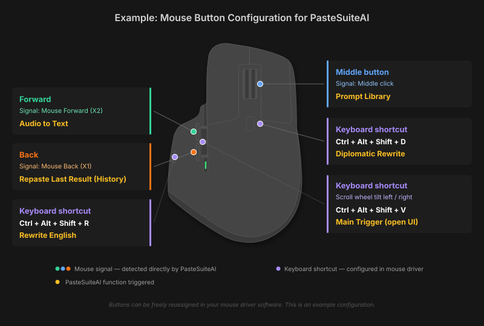

Mouse Configuration
Use your mouse buttons to trigger PasteSuiteAI actions — no keyboard needed
How Mouse Triggers Work
PasteSuiteAI can detect mouse button clicks system-wide, just like keyboard hotkeys. Select text in any application, click the assigned mouse button, and the action runs instantly. You can also combine mouse buttons with Ctrl, Alt, or Shift for more combinations.
There are two ways to trigger actions with your mouse:
- Mouse signals — buttons that Windows recognizes natively (Middle, Back, Forward). PasteSuiteAI detects these directly.
- Keyboard shortcuts via mouse driver — buttons that only your mouse software understands (gesture buttons, scroll wheel tilts, etc.). You assign a keyboard shortcut to them in your mouse software, and PasteSuiteAI picks it up as a regular hotkey.
Which Mouse Buttons Can PasteSuiteAI Detect?
Windows supports 5 standard mouse buttons. PasteSuiteAI can detect all of them. Anything beyond these 5 requires your mouse driver software to translate the button into something Windows understands.
| Button | Windows Signal | Detected? | Usable as Trigger? |
|---|---|---|---|
| Left click | WM_LBUTTONDOWN | Yes | Only with modifier (Ctrl/Alt/Shift) |
| Right click | WM_RBUTTONDOWN | Yes | No (reserved for context menus) |
| Middle click (scroll wheel) | WM_MBUTTONDOWN | Yes | Yes — middle |
| Back / X1 | XBUTTON1 | Yes | Yes — x1 |
| Forward / X2 | XBUTTON2 | Yes | Yes — x2 |
x2,
regardless of where the button is located on the mouse.
Mice with Extra Buttons (6+ Buttons)
Many ergonomic and gaming mice have more than 5 buttons. Examples include the Logitech MX Master series (7 clickable buttons + scroll tilts + thumb wheel), Razer DeathAdder, Corsair Scimitar, and others.
Windows can only see 5 standard mouse buttons. Everything beyond that is handled by the mouse manufacturer's driver software. Here is what this means for a typical multi-button mouse:
| # | Button | Detected by PasteSuiteAI? | How to Use |
|---|---|---|---|
| 1 | Left click | Yes | Only with modifier key |
| 2 | Right click | Yes | Not usable (system reserved) |
| 3 | Scroll wheel click | Yes, directly | Assign as mouse trigger (middle) |
| 4 | Scroll wheel tilt left | No (scroll event only) | Assign a keyboard shortcut in mouse software |
| 5 | Scroll wheel tilt right | No (scroll event only) | Assign a keyboard shortcut in mouse software |
| 6 | Mode-shift / top button | No (firmware only) | Assign a keyboard shortcut in mouse software |
| 7 | Forward (thumb) | Yes, directly | Assign as mouse trigger (x2) |
| 8 | Back (thumb) | Yes, directly | Assign as mouse trigger (x1) |
| 9 | Gesture / extra thumb button | No (vendor-specific) | Assign a keyboard shortcut in mouse software |
| 10 | Horizontal thumb wheel | No (scroll event only) | Assign a keyboard shortcut in mouse software |
| 11 | DPI switch (bottom) | No | Usually not configurable |
Summary: Buttons 3, 7, and 8 (Middle, Forward, Back) work directly. Buttons 4, 5, 6, 9, and 10 need a keyboard shortcut assigned in your mouse software. Buttons 1, 2 and 11 are not practical as triggers.
The Keyboard Shortcut Trick
For buttons that PasteSuiteAI cannot detect directly, there is a simple workaround:
- Open your mouse driver software (e.g., Logitech Options+, Razer Synapse, Corsair iCUE, SteelSeries GG).
- Find the button you want to use.
- Set its action to "Keyboard shortcut".
- Enter a key combination that matches a PasteSuiteAI hotkey (e.g., Ctrl+Alt+Shift+D).
Now, when you press that mouse button, your mouse software sends the keyboard shortcut to Windows, and PasteSuiteAI triggers the assigned action. The mouse button effectively becomes a hotkey button.
Default Mouse Triggers
PasteSuiteAI comes with these mouse triggers pre-configured out of the box:
| Function | Mouse Trigger | Button |
|---|---|---|
| Prompt Library | middle |
Scroll wheel click |
| Repaste Last Result | x1 |
Back / thumb button |
| Audio to Text | x2 |
Forward / thumb button |
All other actions use keyboard hotkeys by default. You can change or add mouse triggers for any action in Settings → Action card → Mouse Trigger.
Example: Full Mouse Configuration
Here is an example of how to set up a multi-button mouse for maximum productivity. This configuration uses all available buttons to cover the most common actions without ever touching the keyboard.

| Mouse Button | Trigger Type | Value | PasteSuiteAI Function |
|---|---|---|---|
| Scroll wheel click | Mouse signal | middle |
Prompt Library |
| Back (thumb) | Mouse signal | x1 |
Repaste Last Result |
| Forward (thumb) | Mouse signal | x2 |
Audio to Text |
| Gesture / thumb button | Keyboard shortcut | Ctrl+Alt+Shift+R | Rewrite English |
| Top button (behind wheel) | Keyboard shortcut | Ctrl+Alt+Shift+D | Diplomatic Rewrite |
| Scroll wheel tilt left/right | Keyboard shortcut | Ctrl+Alt+Shift+V | Main Trigger (open UI) |
Step-by-Step Setup
Step 1: Configure the Direct Mouse Triggers
These work out of the box with the default configuration. If you changed them, go to Settings in PasteSuiteAI and set:
- On the Audio to Text action card → Mouse Trigger → click with the Forward button → Save
- On the General tab → Repaste hotkey section → Mouse Trigger → click with the Back button → Save
- On the General tab → Prompt Library section → Mouse Trigger → click with the scroll wheel → Save
Step 2: Configure the Keyboard Shortcuts in Your Mouse Software
For buttons that PasteSuiteAI cannot detect directly, open your mouse driver software and assign keyboard shortcuts:
- Open your mouse configuration software (e.g., Logitech Options+).
- Select the button you want to configure.
- Set the action to "Keyboard shortcut".
- Record the matching PasteSuiteAI hotkey:
- Gesture button → Ctrl+Alt+Shift+R (Rewrite English)
- Top button → Ctrl+Alt+Shift+D (Diplomatic Rewrite)
- Scroll tilt left → Ctrl+Alt+Shift+V (Main Trigger)
- Scroll tilt right → Ctrl+Alt+Shift+V (Main Trigger)
- Save your mouse configuration.
Troubleshooting
Mouse button does not trigger anything
- Check your mouse software. If your mouse driver (Logitech Options+, Razer Synapse, etc.) assigns its own action to the button, it may consume the event before PasteSuiteAI sees it. Set the button to "Forward", "Back", "Middle", or a keyboard shortcut.
- Verify the trigger in PasteSuiteAI. Open Settings, find the action card, and check that the mouse trigger is correctly assigned.
- Check for conflicts. Two actions cannot share the same mouse trigger. PasteSuiteAI warns you about conflicts when saving.
Back or Forward button not detected
- Some mouse software intercepts X1/X2 (Back/Forward) for its own features like "Browser Back" or "Smart Actions". Change the button assignment to "Default" or "No action" in your mouse software to let the signal pass through to PasteSuiteAI.
- If your mouse has no Back/Forward buttons, you can use
middlewith modifiers instead (e.g.,ctrl+middle,shift+middle).
Keyboard shortcut from mouse software does not work
- Make sure the keyboard shortcut you assigned in your mouse software exactly matches the hotkey configured in PasteSuiteAI. Modifier order does not matter — PasteSuiteAI normalizes it automatically.
- Some mouse software adds a small delay or sends modifier keys in an unexpected order. If a shortcut does not trigger reliably, try a different key combination.
Available Trigger Combinations
With 3 directly detected buttons and 3 modifier keys, you have many possible combinations:
| Button | No Modifier | + Ctrl | + Alt | + Shift | + Ctrl+Alt | + Ctrl+Shift | + Alt+Shift | + All 3 |
|---|---|---|---|---|---|---|---|---|
middle |
✓ | ✓ | ✓ | ✓ | ✓ | ✓ | ✓ | ✓ |
x1 |
✓ | ✓ | ✓ | ✓ | ✓ | ✓ | ✓ | ✓ |
x2 |
✓ | ✓ | ✓ | ✓ | ✓ | ✓ | ✓ | ✓ |
That is 24 unique mouse triggers — plus any number of additional triggers from keyboard shortcuts routed through your mouse driver software.
Related
Logitech, Logi, Options+, and MX Master are trademarks or registered trademarks of Logitech International S.A. Razer and Razer Synapse are trademarks of Razer Inc. Corsair and iCUE are trademarks of Corsair Gaming, Inc. SteelSeries and SteelSeries GG are trademarks of SteelSeries ApS. PasteSuiteAI is not affiliated with, endorsed by, or sponsored by any of these companies. All third-party names are used solely for identification purposes.